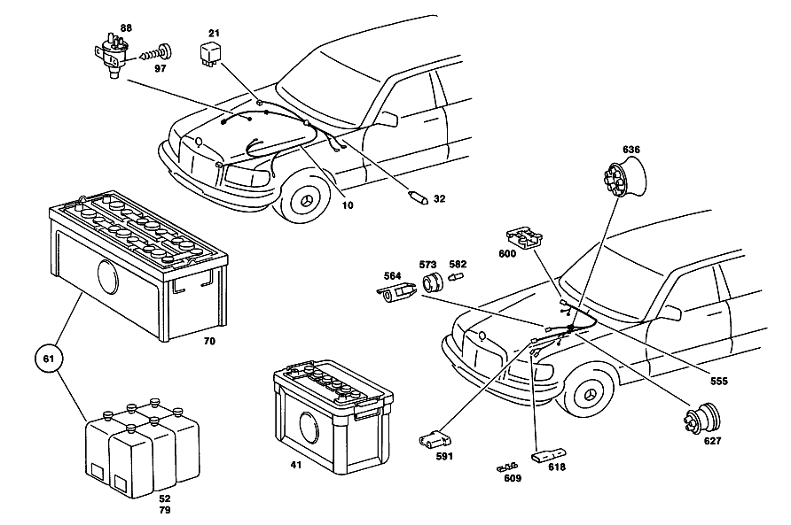

| № | Артикул | Название | Кол. | Примечание | Ограничение |
|---|---|---|---|---|---|
| 41 | A 001 541 10 01 | аккумуляторная батарея | - | ||
| 41 | A 003 541 32 01 | АКБ | - | ||
| 41 | A 001 541 80 01 | аккумуляторная батарея | - | ||
| 41 | A 003 541 92 01 | аккумуляторная батарея | - | ||
| 41 | A 004 541 46 01 | аккумуляторная батарея | 1 | 12V/100AH [001] UP TO CHASSIS 028,029 023224 032 029234 033 029241 | |
| 52 | A 000 989 06 15 | Электролит | 1 | [001] UP TO CHASSIS 028,029 023224 032 029234 033 029241 | |
| 61 | A 123 540 02 01 | аккумуляторная батарея | - | ||
| 61 | A 140 540 01 01 | аккумуляторная батарея | - | ||
| 61 | A 003 541 92 01 | аккумуляторная батарея | - | ||
| 61 | A 004 541 46 01 | аккумуляторная батарея | 1 | К\-Т ДЕТАЛЕЙ; 12V/100AH [002] FROM CHASSIS 028,029 023225 032 029235 033 029242 | |
| 70 | A 001 541 45 01 | - АКБ | - | [002] FROM CHASSIS 028,029 023225 032 029235 033 029242 [003] EXHAUST STOCK OF OLD PARTS NUMBER FIRST UP TO CHASSIS 028,029 049405 032,033 086443 | |
| 70 | A 001 541 80 01 | аккумуляторная батарея | - | ||
| 70 | A 003 541 92 01 | аккумуляторная батарея | - | ||
| 70 | A 004 541 46 01 | аккумуляторная батарея | 1 | 12V\-88AH; 12V/100AH [002] FROM CHASSIS 028,029 023225 032 029235 033 029242 | |
| 79 | A 000 989 08 15 | - КОМПЛ. КИСЛОТЫ АККУМУЛ. | - | ||
| 79 | A 000 989 14 15 | - Электролит | 1 | [002] FROM CHASSIS 028,029 023225 032 029235 033 029242 | |
| 88 | A 001 540 20 97 | КЛАПАН | - | ||
| 88 | A 001 540 68 97 | КЛАПАН | - | ||
| 88 | A 001 540 70 97 | КЛАПАН | - | ||
| 88 | A 001 540 86 97 | Электромагнитный клапан | 1 | RETARD IGNITION | |
| 88 | A 001 540 86 97 | Электромагнитный клапан | 1 | RETARD IGNITION | |
| 97 | N 007981 004233 | Шуруп | - | ||
| 97 | N 000000 000460 | Шуруп | 2 | 4.8X13 | |
| 106 | A 116 540 66 05 | ЖГУТ ЭЛ.-ПРОВОДКИ | - | Рулевое управление: ВлевоАвтоматическая коробка переключения передач [004] EXHAUST STOCK OF OLD PARTS NUMBER FIRST UP TO CHASSIS 028,029 050817 032,033 089260 | |
| 106 | A 116 540 75 05 | ЖГУТ ЭЛ.-ПРОВОДКИ | 1 | ГЛ. ЖГУТ ПРОВОДКИ Рулевое управление: ВлевоАвтоматическая коробка переключения передач [402] БОЛЬШЕ НЕ ПОСТАВЛЯЕТСЯ [005] FROM CHASSIS 028,029 050818 032,033 089261 | |
| 115 | A 000 546 43 40 | - ПЛОСКИЙ ШТЕКЕР | 5 | 1\-2.5 MM2 Рулевое управление: ВлевоАвтоматическая коробка переключения передач | |
| 124 | A 000 546 00 45 | - ИЗОЛИРУЮЩАЯ ВТУЛКА | - | Рулевое управление: ВлевоАвтоматическая коробка переключения передач | |
| 124 | A 000 546 08 45 | - Изоляционная втулка | 6 | Рулевое управление: ВлевоАвтоматическая коробка переключения передач | |
| 133 | A 004 545 85 28 | - ШТЕКЕР | - | Рулевое управление: ВлевоАвтоматическая коробка переключения передач | |
| 133 | A 008 545 20 28 | - Нижняя часть корпуса | 1 | ОДНОКОНТАКТ.; 1\-PIN Рулевое управление: ВлевоАвтоматическая коробка переключения передач | |
| 135 | A 009 545 14 28 | - Верхняя часть корпуса | 1 | TO 008 545 20 28 Рулевое управление: ВлевоАвтоматическая коробка переключения передач | |
| 137 | A 001 545 44 26 | - Контактная втулка | 1 | TO 008 545 20 28; 0.35\-6.0 MM2 RK4.0 Рулевое управление: ВлевоАвтоматическая коробка переключения передач | |
| 142 | A 002 545 49 28 | - ШТЕКЕР | - | Рулевое управление: ВлевоАвтоматическая коробка переключения передач | |
| 142 | A 008 545 37 28 | - Сцепление, механическое | 4 | ДВУХПОЛЮСНЫЙ; 2\-PIN Рулевое управление: ВлевоАвтоматическая коробка переключения передач | |
| 151 | A 008 545 38 28 | - Верхняя часть корпуса | 4 | TO 008 545 37 28 Рулевое управление: ВлевоАвтоматическая коробка переключения передач | |
| 160 | A 001 545 35 26 | - Наружный круглый штекер | - | Рулевое управление: ВлевоАвтоматическая коробка переключения передач | |
| 160 | A 003 545 26 26 | - Контактная втулка | 8 | TO 008 545 37 28; 0.35\-4.0 MM2 RK4 Рулевое управление: ВлевоАвтоматическая коробка переключения передач | |
| 169 | A 005 545 13 28 | - ШТЕКЕР | - | Рулевое управление: ВлевоАвтоматическая коробка переключения передач | |
| 169 | A 006 545 80 28 | - CONTACT SUPPORT | 4 | ШЕСТИПОЛЮСНЫЙ; 6\-PIN Рулевое управление: ВлевоАвтоматическая коробка переключения передач | |
| 178 | A 009 545 30 28 | - Верхняя часть корпуса | 4 | TO 006 545 80 28 Рулевое управление: ВлевоАвтоматическая коробка переключения передач | |
| 187 | A 001 545 37 26 | - Розетка | - | Рулевое управление: ВлевоАвтоматическая коробка переключения передач | |
| 187 | A 001 545 35 26 | - Наружный круглый штекер | - | Рулевое управление: ВлевоАвтоматическая коробка переключения передач | |
| 187 | A 003 545 26 26 | - Контактная втулка | 24 | TO 006 545 80 28; 0.35\-4.0 MM2 RK4 Рулевое управление: ВлевоАвтоматическая коробка переключения передач | |
| 196 | A 004 545 40 28 | - Корпус штекера | 1 | РЕЛЕ СО СДВОЕННЫМ КОНТАКТОМ, 5\-КОНТАКТ.; 5\-PIN FF6.3 Рулевое управление: ВлевоАвтоматическая коробка переключения передач | |
| 205 | A 000 545 83 34 | - предохранитель | 2 | 16 A Рулевое управление: ВлевоАвтоматическая коробка переключения передач | |
| 209 | A 001 545 05 34 | - ПРЕДОХРАНИТЕЛЬ | 1 | 5A Рулевое управление: ВлевоАвтоматическая коробка переключения передач [402] БОЛЬШЕ НЕ ПОСТАВЛЯЕТСЯ | |
| 214 | A 001 545 04 34 | - ПРЕДОХРАНИТЕЛЬ | 1 | ДОПОЛНИТ. ПРЕДОХРАНИТЕЛЬ ДЛЯ УСИЛИТЕЛЯ 2 A Рулевое управление: ВлевоАвтоматическая коробка переключения передач [402] БОЛЬШЕ НЕ ПОСТАВЛЯЕТСЯ | |
| 223 | A 123 827 02 34 | - ПРУЖИНА | - | Рулевое управление: ВлевоАвтоматическая коробка переключения передач | |
| 223 | A 000 827 03 37 | - Закр. блок предохр. | 2 | ДОПОЛНИТ. ПРЕДОХРАНИТЕЛЬ ДЛЯ УСИЛИТЕЛЯ Рулевое управление: ВлевоАвтоматическая коробка переключения передач [402] БОЛЬШЕ НЕ ПОСТАВЛЯЕТСЯ | |
| 232 | A 123 827 00 37 | - БЛОК ПРЕДОХРАНИТЕЛЕЙ | - | Рулевое управление: ВлевоАвтоматическая коробка переключения передач | |
| 232 | A 000 827 03 37 | - Закр. блок предохр. | 2 | ДОПОЛНИТ. ПРЕДОХРАНИТЕЛЬ ДЛЯ УСИЛИТЕЛЯ Рулевое управление: ВлевоАвтоматическая коробка переключения передач [402] БОЛЬШЕ НЕ ПОСТАВЛЯЕТСЯ | |
| 236 | A 123 827 01 37 | - БЛОК ПРЕДОХРАНИТЕЛЕЙ | - | Рулевое управление: ВлевоАвтоматическая коробка переключения передач | |
| 236 | A 000 827 03 37 | - Закр. блок предохр. | 2 | ДОПОЛНИТ. ПРЕДОХРАНИТЕЛЬ ДЛЯ УСИЛИТЕЛЯ Рулевое управление: ВлевоАвтоматическая коробка переключения передач [402] БОЛЬШЕ НЕ ПОСТАВЛЯЕТСЯ | |
| 241 | A 008 545 40 28 | - Штекерная втулка | 2 | TO 004 545 40 28 Рулевое управление: ВлевоАвтоматическая коробка переключения передач [402] БОЛЬШЕ НЕ ПОСТАВЛЯЕТСЯ | |
| 250 | A 007 545 69 28 | - ПЛОСКИЙ ШТЕКЕРНЫЙ КОНТАКТ | - | 0.5 MM2 FF6.3 Рулевое управление: ВлевоАвтоматическая коробка переключения передач | |
| 250 | A 000 540 45 15 | - Штекерная втулка | 1 | TO 004 545 40 28; 1.5\-2.5 MM2 FF6.3 Рулевое управление: ВлевоАвтоматическая коробка переключения передач | |
| 259 | A 008 545 46 28 | - ШТЕКЕР | 2 | TO 004 545 40 28 Рулевое управление: ВлевоАвтоматическая коробка переключения передач [402] БОЛЬШЕ НЕ ПОСТАВЛЯЕТСЯ | |
| 268 | A 008 545 34 28 | - ШТЕКЕР | 1 | ПЯТИПОЛЮСНЫЙ Рулевое управление: ВлевоАвтоматическая коробка переключения передач | |
| 270 | A 008 545 35 28 | - ШТЕКЕР | 1 | ПЯТИПОЛЮСНЫЙ Рулевое управление: ВлевоАвтоматическая коробка переключения передач | |
| 276 | A 008 545 44 28 | - ШТЕКЕР | - | Рулевое управление: ВлевоАвтоматическая коробка переключения передач | |
| 276 | A 007 545 69 28 | - ПЛОСКИЙ ШТЕКЕРНЫЙ КОНТАКТ | - | 0.5 MM2 FF6.3 Рулевое управление: ВлевоАвтоматическая коробка переключения передач | |
| 276 | A 000 540 45 15 | - Штекерная втулка | 15 | TO 008 545 34 28,008 545 35 28; 1.5\-2.5 MM2 FF6.3 Рулевое управление: ВлевоАвтоматическая коробка переключения передач | |
| 285 | A 008 545 45 28 | - ШТЕКЕР | 3 | TO 008 545 35 28,008 545 36 28 Рулевое управление: ВлевоАвтоматическая коробка переключения передач | |
| 294 | A 002 545 35 28 | - ШТЕКЕР | - | Рулевое управление: ВлевоАвтоматическая коробка переключения передач | |
| 294 | A 009 545 26 28 | - Сцепление, механическое | 1 | РАЗЪЕМ ДЛЯ КОНТРОЛЬНОГО ПРИБОРА; 12\-КОНТАКТН.; 12\-PIN Рулевое управление: ВлевоАвтоматическая коробка переключения передач | |
| 303 | A 009 545 24 28 | - Сцепление, механическое | 1 | TO 009 545 26 28 Рулевое управление: ВлевоАвтоматическая коробка переключения передач | |
| 312 | A 001 545 37 26 | - Розетка | - | Рулевое управление: ВлевоАвтоматическая коробка переключения передач | |
| 312 | A 001 545 35 26 | - Наружный круглый штекер | - | Рулевое управление: ВлевоАвтоматическая коробка переключения передач | |
| 312 | A 003 545 26 26 | - Контактная втулка | 10 | TO 009 545 26 28; 0.35\-4.0 MM2 RK4 Рулевое управление: ВлевоАвтоматическая коробка переключения передач | |
| 321 | A 002 545 26 28 | - ШТЕКЕР | - | Рулевое управление: ВлевоАвтоматическая коробка переключения передач | |
| 321 | A 009 545 54 28 | - Сцепление, механическое | 1 | РАЗЪЕМ ДЛЯ КОНТРОЛЬНОГО ПРИБОРА; 12\-КОНТАКТН.; 12\-PIN Рулевое управление: ВлевоАвтоматическая коробка переключения передач | |
| 330 | A 009 545 55 28 | - ШТЕКЕР | - | Рулевое управление: ВлевоАвтоматическая коробка переключения передач | |
| 330 | A 009 545 24 28 | - Сцепление, механическое | 1 | TO 009 545 54 28 Рулевое управление: ВлевоАвтоматическая коробка переключения передач | |
| 339 | A 001 545 38 26 | - Контактный стержень | 9 | TO 009 545 54 28; 4.0 MM2 RK4 Рулевое управление: ВлевоАвтоматическая коробка переключения передач | |
| 348 | A 008 545 36 28 | - ШТЕКЕР | 1 | ВОСЬМИПОЛЮСНЫЙ Рулевое управление: ВлевоАвтоматическая коробка переключения передач | |
| 357 | A 005 545 17 28 | - ШТЕКЕР | - | Рулевое управление: ВлевоАвтоматическая коробка переключения передач | |
| 357 | A 011 545 59 28 | - Сцепление, механическое | 5 | ДВУХКОНТАКТН.; ГЛАВНЫЙ ВЫКЛЮЧАТЕЛЬ, ВЫКЛЮЧАТЕЛЬ КОМПРЕССОРА И ДВУХПОЗИЦ. ВЫКЛЮЧАТЕЛЬ УРОВНЯ Рулевое управление: ВлевоАвтоматическая коробка переключения передач | |
| 366 | A 005 545 18 28 | - Штекерная втулка | 10 | TO 005 545 17 28 Рулевое управление: ВлевоАвтоматическая коробка переключения передач | |
| 375 | A 000 821 04 26 | - СЦЕПЛЕНИЕ | - | Рулевое управление: ВлевоАвтоматическая коробка переключения передач | |
| 375 | A 000 821 24 26 | - СЦЕПЛЕНИЕ | 1 | ЧЕТЫРЁХПОЛЮСНЫЙ Рулевое управление: ВлевоАвтоматическая коробка переключения передач [402] БОЛЬШЕ НЕ ПОСТАВЛЯЕТСЯ | |
| 384 | A 010 545 66 28 | - Крышка | 1 | TO 000 821 24 26 Рулевое управление: ВлевоАвтоматическая коробка переключения передач | |
| 393 | A 001 545 44 26 | - Контактная втулка | 4 | TO 000 821 24 26; 0.35\-6.0 MM2 RK4.0 Рулевое управление: ВлевоАвтоматическая коробка переключения передач | |
| 402 | A 000 821 00 77 | - Диод | 1 | Рулевое управление: ВлевоАвтоматическая коробка переключения передач | |
| 411 | A 000 546 83 40 | - Штекерная втулка | 2 | 0.5\-1.0 MM2 FF6.3 Рулевое управление: ВлевоАвтоматическая коробка переключения передач | |
| 420 | A 000 546 04 45 | - Изоляционная втулка | 2 | Рулевое управление: ВлевоАвтоматическая коробка переключения передач | |
| 429 | A 000 545 07 45 | - Защитный колпачок | 1 | Рулевое управление: ВлевоАвтоматическая коробка переключения передач | |
| 438 | A 008 545 11 28 | - Крышка | 4 | TO 008 545 08 28; 2\-PIN RK4. Рулевое управление: ВлевоАвтоматическая коробка переключения передач | |
| 447 | A 008 545 08 28 | - Корпус штекерной втулки | 4 | ДВУХПОЛЮСНЫЙ; 2\-PIN RK4 Рулевое управление: ВлевоАвтоматическая коробка переключения передач | |
| 456 | A 001 545 26 26 | - ШТЕК. ГНЕЗДО | - | Рулевое управление: ВлевоАвтоматическая коробка переключения передач | |
| 456 | A 001 545 44 26 | - Контактная втулка | 8 | TO 008 545 08 28; 0.35\-6.0 MM2 RK4.0 Рулевое управление: ВлевоАвтоматическая коробка переключения передач | |
| 465 | A 005 545 56 28 | - ШТЕКЕР | - | Рулевое управление: ВлевоАвтоматическая коробка переключения передач | |
| 465 | A 009 545 44 28 | - Сцепление, механическое | 1 | ДАТЧИК НАРУЖНОЙ ТЕМПЕРАТУРЫ; 2\-PIN Рулевое управление: ВлевоАвтоматическая коробка переключения передач | |
| 474 | A 009 545 45 28 | - Сцепление, механическое | 1 | TO 009 545 44 28 Рулевое управление: ВлевоАвтоматическая коробка переключения передач | |
| 483 | A 001 545 37 26 | - Розетка | - | Рулевое управление: ВлевоАвтоматическая коробка переключения передач | |
| 483 | A 001 545 35 26 | - Наружный круглый штекер | - | Рулевое управление: ВлевоАвтоматическая коробка переключения передач | |
| 483 | A 003 545 26 26 | - Контактная втулка | 2 | TO 009 545 44 28; 0.35\-4.0 MM2 RK4 Рулевое управление: ВлевоАвтоматическая коробка переключения передач | |
| 492 | N 007985 004107 | - Винт | 2 | ПРОВОД НА КАМЕРЕ ПРЕДОХР.; M4X10 Рулевое управление: ВлевоАвтоматическая коробка переключения передач | |
| 501 | N 912004 004102 | - Пружинное кольцо | 2 | ПРОВОД НА КАМЕРЕ ПРЕДОХР. Рулевое управление: ВлевоАвтоматическая коробка переключения передач | |
| 510 | A 114 997 02 90 | связующее вещество | - | Рулевое управление: ВлевоАвтоматическая коробка переключения передач | |
| 510 | A 114 997 05 90 | связующее вещество | 1 | 210 MM; 9X210 MM Рулевое управление: ВлевоАвтоматическая коробка переключения передач | |
| 519 | A 001 997 41 90 | Кабельная стяжка | 2 | 100 MM; 7X100 MM Рулевое управление: ВлевоАвтоматическая коробка переключения передач | |
| 528 | A 002 988 48 78 | Скоба | 2 | Рулевое управление: ВлевоАвтоматическая коробка переключения передач | |
| 537 | A 000 988 18 78 | Скоба | 1 | Рулевое управление: ВлевоАвтоматическая коробка переключения передач | |
| 546 | A 001 542 02 19 | Реле | 2 | Рулевое управление: ВлевоАвтоматическая коробка переключения передач | |
| 546 | A 001 542 22 19 | РЕЛЕ | 2 | Рулевое управление: ВлевоАвтоматическая коробка переключения передач | |
| 555 | A 116 540 18 08 | ЖГУТ ЭЛ.-ПРОВОДКИ | 1 | ВЕНТИЛЯТОР Рулевое управление: ВлевоАвтоматическая коробка переключения передач [402] БОЛЬШЕ НЕ ПОСТАВЛЯЕТСЯ [006] FROM CHASSIS 032 068130 033 072129 | |
| 564 | A 008 545 20 28 | - Нижняя часть корпуса | 1 | ОДНОКОНТАКТ.; 1\-PIN Рулевое управление: ВлевоАвтоматическая коробка переключения передач [006] FROM CHASSIS 032 068130 033 072129 | |
| 573 | A 009 545 14 28 | - Верхняя часть корпуса | 1 | TO 008 545 20 28 Рулевое управление: ВлевоАвтоматическая коробка переключения передач [006] FROM CHASSIS 032 068130 033 072129 | |
| 582 | A 001 545 26 26 | - ШТЕК. ГНЕЗДО | - | Рулевое управление: ВлевоАвтоматическая коробка переключения передач | |
| 582 | A 001 545 44 26 | - Контактная втулка | 1 | TO 008 545 20 28; 0.35\-6.0 MM2 RK4.0 Рулевое управление: ВлевоАвтоматическая коробка переключения передач [006] FROM CHASSIS 032 068130 033 072129 | |
| 591 | A 002 545 49 28 | - ШТЕКЕР | - | Рулевое управление: ВлевоАвтоматическая коробка переключения передач | |
| 591 | A 008 545 37 28 | - Сцепление, механическое | 1 | ДВУХПОЛЮСНЫЙ; 2\-PIN Рулевое управление: ВлевоАвтоматическая коробка переключения передач [006] FROM CHASSIS 032 068130 033 072129 | |
| 600 | A 005 545 13 28 | - ШТЕКЕР | - | Рулевое управление: ВлевоАвтоматическая коробка переключения передач | |
| 600 | A 006 545 80 28 | - CONTACT SUPPORT | 1 | ШЕСТИПОЛЮСНЫЙ; 6\-PIN Рулевое управление: ВлевоАвтоматическая коробка переключения передач [006] FROM CHASSIS 032 068130 033 072129 | |
| 609 | A 000 546 43 40 | - ПЛОСКИЙ ШТЕКЕР | 2 | 1\-2.5 MM2 Рулевое управление: ВлевоАвтоматическая коробка переключения передач [006] FROM CHASSIS 032 068130 033 072129 | |
| 618 | A 000 546 00 45 | - ИЗОЛИРУЮЩАЯ ВТУЛКА | - | Рулевое управление: ВлевоАвтоматическая коробка переключения передач | |
| 618 | A 000 546 08 45 | - Изоляционная втулка | 1 | Рулевое управление: ВлевоАвтоматическая коробка переключения передач [006] FROM CHASSIS 032 068130 033 072129 | |
| 627 | A 116 997 14 81 | - резиновая втулка | 1 | Рулевое управление: ВлевоАвтоматическая коробка переключения передач [006] FROM CHASSIS 032 068130 033 072129 | |
| 636 | A 111 997 23 81 | - КАБ. ВТУЛКА | - | Рулевое управление: ВлевоАвтоматическая коробка переключения передач | |
| 636 | A 008 997 17 81 | - втулка | 1 | Рулевое управление: ВлевоАвтоматическая коробка переключения передач [006] FROM CHASSIS 032 068130 033 072129 | |
| Q 000000000001 | Важная информация | 99 | THIS DESIGN GROUP COMPRISES SAFETY PARTS ONLY | ||
| Q 000000000001 | Важная информация | 99 | АКБ 12 V 88 AH |
Позиций: 122 · подписано на схемах: 120 · колесо — плавный зум в курсор, перетаскивание — пан, двойной клик — зум, клик по артикулу — скопировать · наведите на строку или цифру на схеме — подсветка связки, клик — закрепить.